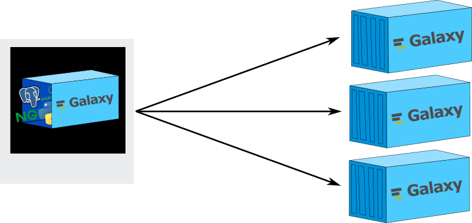
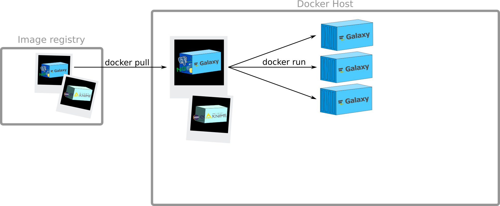
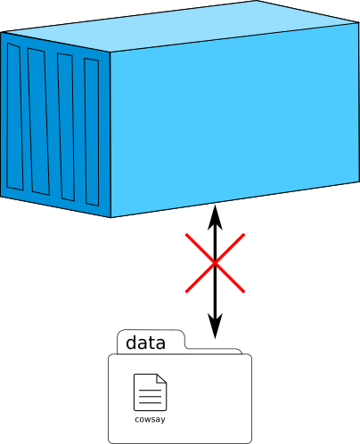
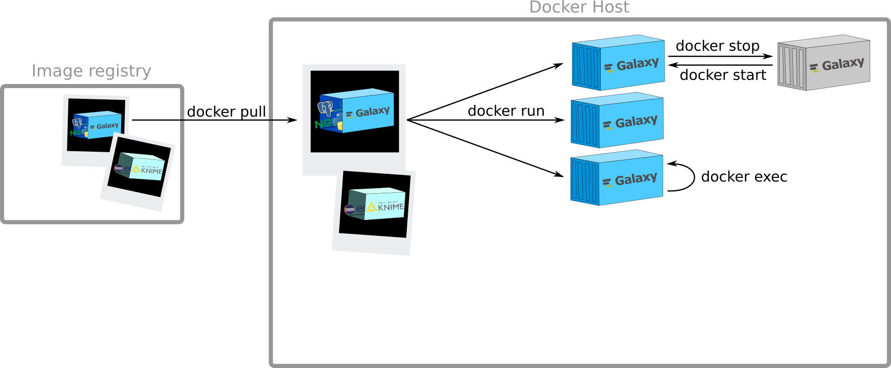
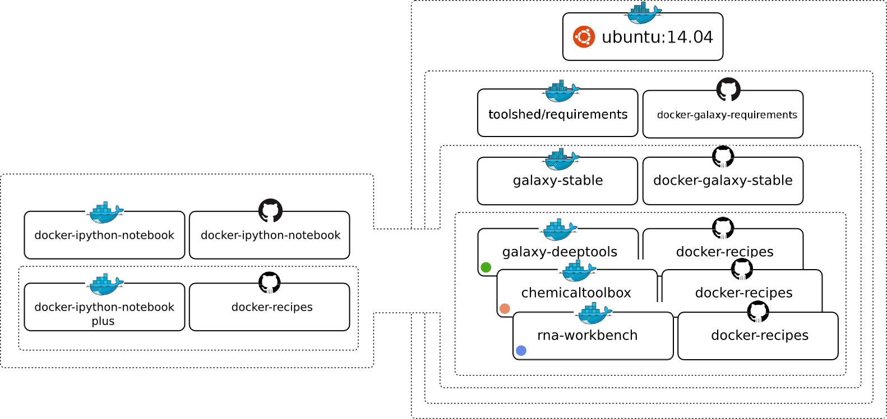

Docker and Galaxy
Contributors
Questions
Why Docker? What is it?
How to use Docker?
How to integrate Galaxy in Docker to facilitate its deployment?
Objectives
Docker basics
Galaxy Docker image (usage)
Galaxy Docker (internals)
Galaxy flavours
Preparing Admin Training VMs
If you’re falling along on Galaxy Admin Training VMs, you will need to setup Docker.
You can modify your Ansible setup to configure this as described at bit.ly/gxadmin-docker-playbook.
You will also need to stop Galaxy running on the VM so that you can run Galaxy in a container.
sudo supervisorctl stop galaxy
Speaker Notes
TODO: Remove this slide after the training, it isn’t general.
Preparation
$ docker pull bgruening/galaxy-stable:18.05
$ git clone https://github.com/bgruening/docker-galaxy-stable.git
Speaker Notes
Here you will learn the internals of the Docker Galaxy Image. We will show you tips and tricks on how to run the Galaxy Docker Image successfully in production, how to manage updates and how to bind the container to a cluster scheduler. Moreover, you will learn how to create your own Galaxy flavour mixing a variety of different tools and visualisations
Why Docker?
What is it?
Deployment issues of bioinformatics tools
- Different environments
- Different OS
- Different packaging
- Conflict between tools or versions
Impact on usability and reproducibility
Deployment issue
Deployment issue
Matrix from Hell
Transport Pre 1960
Transport Pre 1960
Matrix from Hell
Intermodal shipping container
Speaker Notes
A standard container
- Virtually loading any goods
- Sealed until it reaches final delivery
- Can be
- loaded and unloaded
- stacked
- transported efficiently over long distances
- transferred from one mode of transport to another
Docker
Speaker Notes
Docker = An engine that encapsulated any tools as a
- lightweight
- portable
- self sufficient container
- manipulated using standard operations
- run consistently on virtually any hardware platform
A Docker container?
Lightweight and Open
Speaker Notes
- lightweight: same OS kernel, instant start, less RAM use
- open: open standard, run on all major unix distributions and windows
Virtual machines vs Containers
![A cartoon comparing containers vs VMs. On the left the VMs are presented as a layer of server, host os, and hypervisor (type 2) followed by several tall pillars of guest OS, bin/libs and finally their respective apps. Everything is siloed. On the right is containers where the layers are server, host os, and docker engine. Above those are very short pillars of each different app, and when duplicate apps are run, the bin/libs are shown as shared. Text reads: containers are isolated but share OS and where appropriate, bins/libraries.](../../images/container_vs_vm.svg)
Containers more portable and efficient
Speaker Notes
Similar resource isolation and allocation benefits
but a different architectural approach
- VM: application + necessary binaries and libraries + entire guest operating system
- All of which can amount to tens of GBs
- Container: application and all of its dependencies
- Share the kernel with other containers
- Running as isolated processes in user space on the host operating system
How to use Docker?
The client
Speaker Notes
Docker Engine = the core Docker technology on your computer
Client: to talk with Docker
docker --help
Containers? Images?

Speaker Notes
Image:
- recipe that tell how to build your container
- A filesystem and parameters to use at runtime
- snapshot of the content of a container: it doesn’t have state and never changes once built
Container
- a running instance of an image
- you can execute several time the same recipe and if you follow every time the same recipe, you will have the same meal several time. Same for containers
How to get images?
Speaker Notes
Docker Registry:
- stateless
- highly scalable server side application
to stores and distribute Docker images
Example: docker hub, quay.io
docker pull
$ docker pull hello-world
Using default tag: latest
latest: Pulling from library/hello-world
c04b14da8d14: Pull complete
Digest: sha256:0256e8a36e2070f7bf2d0b0763dbabdd67798512411de4cdcf9431a1feb60fd9
Status: Downloaded newer image for hello-world:latest
Creation of containers

docker run
$ docker run hello-world
Hello from Docker!
This message shows that your installation appears to be working correctly.
To generate this message, Docker took the following steps:
1. The Docker client contacted the Docker daemon.
2. The Docker daemon pulled the "hello-world" image from the Docker Hub.
3. The Docker daemon created a new container from that image which runs the
executable that produces the output you are currently reading.
4. The Docker daemon streamed that output to the Docker client, which sent it
to your terminal.
To try something more ambitious, you can run an Ubuntu container with:
$ docker run -it ubuntu bash
Share images, automate workflows, and more with a free Docker Hub account:
https://hub.docker.com
For more examples and ideas, visit:
https://docs.docker.com/engine/userguide/
docker run
$ docker run docker/whalesay cowsay Galaxy
Unable to find image 'docker/whalesay:latest' locally
latest: Pulling from docker/whalesay
e190868d63f8: Pull complete
909cd34c6fd7: Pull complete
0b9bfabab7c1: Pull complete
a3ed95caeb02: Pull complete
00bf65475aba: Pull complete
c57b6bcc83e3: Pull complete
8978f6879e2f: Pull complete
8eed3712d2cf: Pull complete
Digest: sha256:178598e51a26abbc958b8a2e48825c90bc22e641de3d31e18aaf55f3258ba93b
Status: Downloaded newer image for docker/whalesay:latest
________
< Galaxy >
--------
\
\
\
## .
## ## ## ==
## ## ## ## ===
/""""""""""""""""___/ ===
~~~ {~~ ~~~~ ~~~ ~~~~ ~~ ~ / ===- ~~~
\______ o __/
\ \ __/
\____\______/
Speaker Notes
- Automatic
pullif image not findable - Interaction with the container to say something
docker run
$ docker run --help
Usage: docker run [OPTIONS] IMAGE [COMMAND] [ARG...]
Run a command in a new container
-a, --attach=[] Attach to STDIN, STDOUT or STDERR
--add-host=[] Add a custom host-to-IP mapping (host:ip)
--cpu-shares CPU shares (relative weight)
...
-d, --detach Run container in background and print container ID
-e, --env=[] Set environment variables
--entrypoint Overwrite the default ENTRYPOINT of the image
--env-file=[] Read in a file of environment variables
...
-h, --hostname Container host name
-i, --interactive Keep STDIN open even if not attached
--name Assign a name to the container
--net=default Connect a container to a network
...
-P, --publish-all Publish all exposed ports to random ports
-p, --publish=[] Publish a container's port(s) to the host
--privileged Give extended privileges to this container
--rm Automatically remove the container when it exits
-t, --tty Allocate a pseudo-TTY
-v, --volume=[] Bind mount a volume
...
Run an interactive container
$ docker run -t -i docker/whalesay
root@7de97f8dd5eb:/cowsay#
root@7de97f8dd5eb:/cowsay# cowsay Galaxy
________
< Galaxy >
--------
\
\
\
## .
## ## ## ==
## ## ## ## ===
/""""""""""""""""___/ ===
~~~ {~~ ~~~~ ~~~ ~~~~ ~~ ~ / ===- ~~~
\______ o __/
\ \ __/
\____\______/
root@7de97f8dd5eb:/cowsay#
Control during startup
$ docker run -i -t
-p 8080:80 -p 8021:21 -p 9002:9002
--privileged=true
-e "NONUSE=reports"
-e "GALAXY_CONFIG_ADMIN_USERS=albert@einstein.gov"
-e "GALAXY_CONFIG_MASTER_API_KEY=83D4jaba7330aDKHkakjGa937"
-e "GALAXY_CONFIG_BRAND='My own Galaxy flavour'"
-e "GALAXY_LOGGING=full"
bgruening/galaxy-stable:18.05
Speaker Notes
possibility to add many different parameters to control the container when starting it
Management of data
$ mkdir data
$ docker run docker/whalesay cowsay Galaxy > data/cowsay
$ more data/cowsay
________
< Galaxy >
--------
\
\
\
## .
## ## ## ==
## ## ## ## ===
/""""""""""""""""___/ ===
~~~ {~~ ~~~~ ~~~ ~~~~ ~~ ~ / ===- ~~~
\______ o __/
\ \ __/
\____\______/
$ docker run -t -i docker/whalesay
root@f4fa8ed32ef8:/cowsay# ls
ChangeLog INSTALL LICENSE MANIFEST README Wrap.pm.diff cows cowsay cowsay.1 install.pl install.sh pgp_public_key.txt
root@f4fa8ed32ef8:/cowsay# cowsay Hello Galaxy > cowsay2
Can we access the cowsay file inside the container?
And the cowsay2 file outside the container?
Management of data

Speaker Notes
A container is closed
Management of data
Speaker Notes
A container is closed
Data volume

Speaker Notes
Data volume
- a specially-designated directory
- within one or more containers
- bypasses the Union File System
Data volumes designed to persist data, independent of the container’s life cycle:
- Initialisation when a container is created
- Possibility of sharing and reusing among containers
- Direct changes to a data volume
- Persistence of data volumes even if the container itself is deleted
Data volume
Speaker Notes
How to get a data volume?
Data volume
$ ls data/
cowsay_Galaxy
$ docker run -t -i -v $PWD/data:/data docker/whalesay
root@f4fa8ed32ef8:/cowsay# ls /data
cowsay_Galaxy
root@f4fa8ed32ef8:/cowsay# cowsay Galaxy2 > /data/cowsay_Galaxy2
root@f4fa8ed32ef8:/cowsay# ls /data
cowsay_Galaxy cowsay_Galaxy2
root@f4fa8ed32ef8:/cowsay# exit
$ ls data/
cowsay_Galaxy cowsay_Galaxy2
Execution of commands
inside a running container
Speaker Notes
Run a command in a running container
docker exec
$ docker run -d docker/whalesay /bin/sh -c "while true; do sleep 1; done"
7179e85085ef14634f8b50f908a255707743dec0a5d1fd7fb3cd9036334d5177
$ docker exec 7179e85085ef14634f8b50f908a255707743dec0a5d1fd7fb3cd9036334d5177 \
cowsay Galaxy
________
< Galaxy >
--------
\
\
\
## .
## ## ## ==
## ## ## ## ===
/""""""""""""""""___/ ===
~~~ {~~ ~~~~ ~~~ ~~~~ ~~ ~ / ===- ~~~
\______ o __/
\ \ __/
\____\______/
Stop/Start containers

Note: Sending SIGTERM and then SIGKILL after a grace period
docker stop & docker start
$ docker stop 7179e85085ef14634f8b50f908a255707743dec0a5d1fd7fb3cd9036334d5177
7179e85085ef14634f8b50f908a255707743dec0a5d1fd7fb3cd9036334d5177
$
$ docker exec 7179e85085ef14634f8b50f908a255707743dec0a5d1fd7fb3cd9036334d5177 \
cowsay Galaxy
Error response from daemon: Container 7179e85085ef14634f8b50f908a255707743dec0a5d1fd7fb3cd9036334d5177 \
is not running
$
$ docker start 7179e85085ef14634f8b50f908a255707743dec0a5d1fd7fb3cd9036334d5177
7179e85085ef14634f8b50f908a255707743dec0a5d1fd7fb3cd9036334d5177
$
$ docker exec 7179e85085ef14634f8b50f908a255707743dec0a5d1fd7fb3cd9036334d5177 \
cowsay Galaxy
________
< Galaxy >
--------
\
\
\
## .
## ## ## ==
## ## ## ## ===
/""""""""""""""""___/ ===
~~~ {~~ ~~~~ ~~~ ~~~~ ~~ ~ / ===- ~~~
\______ o __/
\ \ __/
\____\______/
View all containers

docker ps
$ docker ps
CONTAINER ID IMAGE COMMAND CREATED STATUS PORTS NAMES
7179e85085ef docker/whalesay "/bin/sh -c 'while tr" 12 minutes ago Up 2 seconds agitated_lovelace
$
$ docker ps -a
CONTAINER ID IMAGE COMMAND CREATED STATUS PORTS NAMES
7de97f8dd5eb docker/whalesay "/bin/bash" 4 minutes ago Exited (0) About a minute ago trusting_swanson
9218bbee9c48 docker/whalesay "/bin/bash" 5 minutes ago Exited (0) 4 minutes ago evil_swirles
7179e85085ef docker/whalesay "/bin/sh -c 'while tr" 13 minutes ago Up 55 seconds agitated_lovelace
ad275579c454 ubuntu "/bin/sh -c 'while tr" 15 minutes ago Exited (137) 13 minutes ago condescending_mestorf
66179c4d16da ubuntu "/bin/bash" About an hour ago Exited (130) 15 minutes ago determined_pasteur
27386c8b69b3 ubuntu "/bin/sh" About an hour ago Exited (0) About an hour ago lonely_ramanujan
4cfefa19e6fa docker/whalesay "/bin/bash" About an hour ago Exited (0) About an hour ago thirsty_chandrasekhar
82687eb94ab9 docker/whalesay "cowsay Galaxy" 2 hours ago Exited (0) 2 hours ago fervent_babbage
6dbabb9384ad tmp-bioconda-builder "/usr/local/bin/tini " 8 days ago Exited (0) 7 days ago tender_bhaskara
5d6f09b94727 tmp-bioconda-builder "/usr/local/bin/tini " 8 days ago Exited (0) 8 days ago jolly_brattain
4e6f38b4c34c tmp-bioconda-builder "/usr/local/bin/tini " 8 days ago Created angry_colden
b3e6c7412a75 tmp-bioconda-builder "/usr/local/bin/tini " 8 days ago Created desperate_visvesvaraya
1ec56c9e37f8 tmp-bioconda-builder "/usr/local/bin/tini " 8 days ago Created hopeful_khorana
2b129d00eb10 tmp-bioconda-builder "/usr/local/bin/tini " 8 days ago Created gigantic_ptolemy
da45ab698f58 fb77c13d04c0 "/usr/local/bin/tini " 13 days ago Exited (0) 13 days ago jovial_yalow
48dc3ed4e173 fb77c13d04c0 "/usr/local/bin/tini " 13 days ago Created focused_ritchie
e9195b6512dd a2107450fdf2 "/usr/local/bin/tini " 2 weeks ago Created thirsty_bardeen
Note: Name of containers and id
Creation of a new image
Speaker Notes
Need a Dockerfile. I will describe it later. Here it is just to give you a broad overview of the principles
View all images

Push your image on a registry
Play with quay.io/biocontainers/samtools:1.3--1
- Get the image
- Launch
samtoolscontainer interactively - Print the help page for
samtools - Launch a
samtoolscontainer in detach mode - Check if it exists and find its name
- Stop it and restart it
- Print the help page using this container
Play with quay.io/biocontainers/samtools:1.3--1
- Create a local
samtool_dirdirectory - Launch an interactive container with a volume pointing at the
samtool_dirdirectory - Add a toy sam file into the local
samtool_dirdirectory - Check if the existence of the file from inside the container
- Visualize the content of the toy file with
samtools viewcommands - Generate stats of the toy file into a
toy_statfile into the localsamtool_dirdirectory
Speaker Notes
data volume is the way to make your tool connecting
How to containerize your tools?
Speaker Notes
Now I am sure all of you want to containerize his tool :)
How to create your image?
A Dockerfile?
A text document that contains all the commands a user could call on the command line to assemble an image
# Comment
INSTRUCTION arguments
.footnote[Best practices]
Speaker Notes
The paper describing the recipe for you container
Review of the commands
Dockerfile & Layers
But Don’t Do it Manually, Use Biocontainers
Tool Dependencies and Containers
How to integrate Galaxy inside Docker Container?
Galaxy Docker Container
A Docker launching a Galaxy instance and
- FTP-Server
- Webserver
- Scheduler
- Process control UI
- ToolShed ready
- Interactive Environment ready
docker run -i -t -p 8080:80 bgruening/galaxy-stable:18.05
Visit your machine on port 8080 to see Galaxy running.
https://github.com/bgruening/docker-galaxy-stable
Launch a Galaxy Docker Container and try to
- Add Data
- Become an Admin
- Restart Galaxy
- Use export mounts (persistent data)
- Trouble shooting (logging)
- Install tools
- …
Galaxy + SLURM =
https://github.com/bgruening/docker-galaxy-stable/tree/dev/docs/Running_jobs_outside_of_the_container.md
Docker flavours

Galactic Flavours
- NCBI-Blast
- ChemicalToolBox
- ballaxy
- NGS-deepTools
- Galaxy ChIP-exo
- Galaxy Proteomics
- Imaging
- Constructive Solid Geometry
- Galaxy for metagenomics
- Galaxy with the Language Application Grid tools
- RNAcommender
- OpenMoleculeGenerator
Create your own Flavour
# Galaxy - My own flavour
#
# VERSION 0.1
FROM bgruening/galaxy-stable:18.05
MAINTAINER Björn A. Grüning, bjoern.gruening@gmail.com
ENV GALAXY_CONFIG_BRAND deepTools
# Adding the tool definitions to the container
ADD my_tool_list.yml $GALAXY_ROOT/my_tool_list.yml
# Install deepTools
RUN install-tools $GALAXY_ROOT/my_tool_list.yml
The tools file
galaxy_instance: http://localhost:8080
tools:
- name: fastqc
owner: devteam
tool_panel_section_id: cshl_library_information
tool_shed_url: https://toolshed.g2.bx.psu.edu
#revisions:
Create a Galaxy Flavour
Galaxy Flavor Generator
https://github.com/galaxyFlavorsGenerators/galaxyFlavorGenerator
Key Points
- Use Docker
- Integrate your tools into Galaxy
- Use Galaxy inside Docker to have a flavoured Galaxy instance
Thank you!
This material is the result of a collaborative work. Thanks to the Galaxy Training Network and all the contributors! Tutorial Content is licensed under
Creative Commons Attribution 4.0 International License.
Tutorial Content is licensed under
Creative Commons Attribution 4.0 International License.